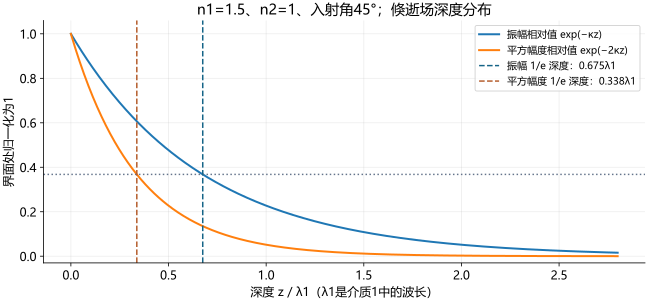

27 倏逝场有多深，能量向哪里流
推导幅度衰减、相位沿界面推进、幅强穿深区别和平均能流，并区分有限光束的侧移。
当前位置：复折射角 → 倏逝场 → 有限光束位移
在全反射棱镜旁放一个物体，它足够接近时能影响反射束。这说明第二介质仍有光场，需要分别考察：场延伸多深？相位向哪里走？平均能量是否穿过界面？

复波矢怎样把“传播”和“衰减”分开？
坐标、时间指数与上一课相同：界面  ，介质2在
，介质2在  ，波的复表示为
，波的复表示为 ![\exp[i(\mathbf k\cdot\mathbf r-\omega t)]](../../assets/11-2/%E5%85%AC%E5%BC%8F-23cab45ea6ba7c6d.svg) 。令
。令  ，
， 是介质1中的波长；
是介质1中的波长； 是真空波长，
是真空波长， 。
。 单位m
单位m ，
， 单位rad/s。
单位rad/s。
界面上相位必须匹配，所以

介质2满足  ，且
，且  ，因此
，因此

代入场表达式：

这里  表示所选场分量的复振幅，各分量共有这个空间因子；p场的矢量分量还需满足
表示所选场分量的复振幅，各分量共有这个空间因子；p场的矢量分量还需满足  ，不能将复p基矢当作普通实单位矢量。取实部后看到：相位沿
，不能将复p基矢当作普通实单位矢量。取实部后看到：相位沿  变化，幅度沿
变化，幅度沿  指数减小。没有实法向传播波，仍然有衰减场，这就是倏逝波（evanescent wave）。
指数减小。没有实法向传播波，仍然有衰减场，这就是倏逝波（evanescent wave）。
电磁边界条件要求切向场连续；非零界面总场通常不能在第二侧突然全为零。衰减解与边界条件共同确定了倏逝场，无需用光粒子绕小圈的轨迹解释。
等相面与等幅面不是同一组面

- 同一时刻相位相同要求
 ，是垂直界面的平面。
，是垂直界面的平面。 - 幅度相同要求
 ，是平行界面的平面。
，是平行界面的平面。
相位法线沿x，幅度法线沿z；两者不同，故是非均匀波。沿界面相位重复的距离与相位速度分别为

课件把这两个量记成  ，但它们不是普通介质2传播波的
，但它们不是普通介质2传播波的  ；这里另取下标“平行”避免混淆。相位速度也不自动等于能量传播速度或信息速度。
；这里另取下标“平行”避免混淆。相位速度也不自动等于能量传播速度或信息速度。
幅度1/e深度与强度1/e深度相差一倍
原页定义的穿透深度  是幅度降到界面值
是幅度降到界面值  时的深度：
时的深度：

 是其单位。场的平方模、能量密度以及本模型的切向平均能流带
是其单位。场的平方模、能量密度以及本模型的切向平均能流带  ，所以相应的1/e深度为
，所以相应的1/e深度为

这里说的“强度衰减”是场平方或沿界面能流的变化，不能把它当作法向传播光强；法向平均能流恰好为零。若实验把强度1/e深度称作穿透深度，数值会与课件的幅度定义差一倍，必须先看定义。

 ，平方量按 。坐标不是虚构的光线轨迹。
，平方量按 。坐标不是虚构的光线轨迹。
课件数值示例（P35）： ，原页给
，原页给  。
。
补充复算： ，
， ，故
，故

原0.45对应真空波长，却写成介质1波长；按本页方程与前式 定义，两者不一致。这里保留原页，并将上述复算与原答案分开呈现。强度平方量的1/e深度则为  。
。
在一般角度它可能与波长同数量级；接近临界角时  ，
， ，因而“只能进入一个波长”不是普遍界限。在有限束、有限尺寸和有吸收的实际系统中，这个理想发散还需另行处理；这里仅讨论理想模型，没有相应实验数据。
，因而“只能进入一个波长”不是普遍界限。在有限束、有限尺寸和有吸收的实际系统中，这个理想发散还需另行处理；这里仅讨论理想模型，没有相应实验数据。
有场为什么没有平均法向能流？

补充推导（用纯s波明确验证）：令复场  ，其中
，其中  ，时间因子省去。Maxwell方程给
，时间因子省去。Maxwell方程给

因此

时间平均Poynting矢量为

代入得

为什么法向为零？ 与
与  相差90°，乘积时间平均的实部为零；切向的
相差90°，乘积时间平均的实部为零；切向的  同相，平均乘积不为零。
同相，平均乘积不为零。 单位H/m，式子最终是W/m
单位H/m，式子最终是W/m 。纯p用
。纯p用  推导同理：
推导同理：

原P36的  乘系数平方和公式缺少在SI中必须有的阻抗等因子，也没有明确深度与分量幅值，不能据此计算W/m。本课保留原式所在页，用上述明确场分量的式子作定量说明。
乘系数平方和公式缺少在SI中必须有的阻抗等因子，也没有明确深度与分量幅值，不能据此计算W/m。本课保留原式所在页，用上述明确场分量的式子作定量说明。
课件“y方向平均能流零”的结论在纯s、纯p，或两分量统计不相干而交叉项平均为零时成立；一般相干复合偏振还须计算交叉项，不能无条件推广。无限平面波模型中沿x一直有场与切向平均能流；不存在一条进入第二侧后必定在固定距离返回的实光线。
有限光束的侧移：相位对角度敏感
有限宽度的光束可视作相近  的平面波叠加。每个分量反射时获得略不同的相位
的平面波叠加。每个分量反射时获得略不同的相位  ；这个相位斜率移动了叠加场的包络峰值。宽束且离临界区足够远时，驻相近似给沿界面的古斯—哈恩森位移：
；这个相位斜率移动了叠加场的包络峰值。宽束且离临界区足够远时，驻相近似给沿界面的古斯—哈恩森位移：

这是补充解释与近似公式，不是原课件给出的推导。角度微分按弧度； 保证长度单位。沿界面的位移
保证长度单位。沿界面的位移  与垂直于反射束轴的投影
与垂直于反射束轴的投影  必须分开。
必须分开。
原P36示例： nm，
nm， ，p波，原给
，p波，原给  。原页没有清楚界定位移测量方向与632.8 nm的介质含义。
。原页没有清楚界定位移测量方向与632.8 nm的介质含义。
补充复算及待核验：按上一课同一相位式和宽束单界面模型，沿界面  ，束轴垂直投影
，束轴垂直投影  ，均不能重现原0.9。该原数值保留为待核验，不当作标准答案。近临界角、紧聚焦、强角谱展宽时，驻相近似可能失败，必须对实际角谱积分；“侧移只有一个波长”不是普遍常数。
，均不能重现原0.9。该原数值保留为待核验，不当作标准答案。近临界角、紧聚焦、强角谱展宽时，驻相近似可能失败，必须对实际角谱积分；“侧移只有一个波长”不是普遍常数。
放回本份课件逻辑链
复法向波矢 → 幅度衰减/界面相位推进 → 零平均法向流但非零场 → 有限束相位斜率产生侧移。下一课利用这个可被近邻物体接触的场，解释受抑全反射和近场扫描。